Audit digitale toegankelijkheid van de Plus iOS-app
Samenvatting
Wij hebben de Plus iOS-app onderzocht tussen 13 en 27 mei 2026. Op dit moment is een deel van de succescriteria als voldoende beoordeeld. In dit rapport lees je welke punten nog verbetering behoeven en hoe deze kunnen worden aangepakt.
Alle schermen van de Plus iOS-app uit de steekproef
Buiten scope:
Web views (inhoud die binnen de app via een browser-component wordt getoond)
Ontoegankelijkheden die ontstaan door de manier waarop het device de app rendert, bijvoorbeeld kleurcontrast in alerts of de weergave van sommige knoppen
Inhoud afkomstig van derden
Basisniveau toegankelijkheidsondersteuning
iPhone 15 Pro Max (iOS-versie 26.4.2)
VoiceOver schermlezer
Extern toetsenbord
Technologieën van de app
iOS (native)
VoiceOver
Voortgang opgeloste bevindingen
Samenwerken met je team
Exporteer alle bevindingen als CSV-bestand. Je kunt het in een (online) spreadsheet inladen om met je team samen te werken.
Importeer in Jira
Exporteer alle bevindingen als Jira-compatibel CSV-bestand. Je kunt het direct importeren via Jira > Issues > Import issues from CSV.
Zelf bijhouden in de browser
Houd per bevinding bij of het is opgelost. Je voortgang wordt opgeslagen in jouw browser. Niemand anders kan je resultaat zien.
0 van
0 opgelost
VoiceOver aanzetten en gebruiken (iOS)
Om de bevindingen in dit rapport zelf te ervaren, test je de app met VoiceOver — de schermlezer die standaard op iedere iPhone en iPad zit. Blinde en slechtziende gebruikers bedienen hun toestel hiermee. Hieronder vind je de stappen om VoiceOver aan te zetten en de gebaren die je nodig hebt.
Tip. Oefen eerst een paar minuten in de Gesture Help: double-tap met vier vingers. In die modus kun je elk gebaar uitproberen zonder dat de app reageert. VoiceOver vertelt je telkens welk gebaar je zojuist hebt gemaakt.
VoiceOver aan- en uitzetten
De snelste manier is een sneltoets instellen. Ga naar Instellingen → Toegankelijkheid → Toegankelijkheidssneltoets en kies VoiceOver. Vanaf dat moment zet je VoiceOver aan of uit door drie keer snel op de zijknop te drukken (op een iPhone X of nieuwer) of op de Home-knop (oudere modellen).
Alternatieven:
Instellingen → Toegankelijkheid → VoiceOver → schakelaar aan of uit.
Vraag Siri: "Hey Siri, zet VoiceOver aan" of "… uit".
De belangrijkste gebaren
Zodra VoiceOver aan staat, werkt je toestel anders dan je gewend bent. Eén keer tikken selecteert alleen een element — je moet double-tappen om iets te activeren. Dit zijn de gebaren die je nodig hebt om door een scherm te bewegen:
Gebaar
Wat het doet
Veeg met één vinger naar rechts
Spring naar het volgende element.
Veeg met één vinger naar links
Spring naar het vorige element.
Double-tap met één vinger
Activeer het element dat VoiceOver heeft geselecteerd (link openen, knop indrukken, vinkje zetten). Je hoeft niet precies op het element te tikken.
Triple-tap met één vinger
Lang indrukken (voor context-menu's en dergelijke).
Veeg met twee vingers omhoog
Lees het hele scherm vanaf het begin voor.
Veeg met twee vingers omlaag
Lees door vanaf het huidige element.
Tik met twee vingers
Pauzeer of hervat de spraak. Handig als je iets wilt opschrijven.
Veeg met drie vingers omhoog of omlaag
Scroll door het scherm.
Tik met vier vingers boven- of onderaan het scherm
Spring naar het eerste of laatste element op het scherm.
De Rotor: springen per type element
De Rotor is het belangrijkste hulpmiddel om snel door een scherm te navigeren. Je kiest eerst op welk type element je wilt springen — bijvoorbeeld alleen de koppen, alleen de knoppen, of alleen de formuliervelden — en beweegt vervolgens van element naar element.
Rotor openen of wisselen: draai twee vingers op het scherm alsof je aan een fysieke draaiknop draait. VoiceOver zegt welke instelling actief is ("Koppen", "Links", "Form controls", …). Draai door tot je de gewenste optie hoort.
Volgende element van dat type: veeg met één vinger omlaag.
Vorige element van dat type: veeg met één vinger omhoog.
Welke opties in de Rotor beschikbaar zijn, stel je in via Instellingen → Toegankelijkheid → VoiceOver → Rotor.
Bevindingen reproduceren
In dit rapport staat bij elke bevinding een "Hoe te reproduceren"-sectie. Daar leggen we uit welke stappen en welke gebaren je moet gebruiken om het probleem zelf te zien. Gebruik deze instructie als naslag: als een stap verwijst naar "de volgende kop", dan weet je dat je de Rotor op Koppen moet zetten en met één vinger omlaag veegt.
Kom je er niet uit? Stuur ons gerust een mail op info@properaccess.nl — we denken graag mee.
Op de schermen wordt de groene kleur (#6FA219) gecombineerd met wit. De contrastverhouding is daarvoor te laag. Op het "Start scherm" staan bijvoorbeeld de knoppen met witte teksten "Registreren" en "Eerst even rondkijken" op een groene achtergrond — contrastverhouding 3,1:1. Op het scherm "Productinformatie (Milner Belegen 30+ stuk)" staat de knop "Toevoegen" met witte tekst op groen. Op "Mijn profiel" geldt dat ook voor de tekst "Mijn profiel". Hetzelfde komt terug op andere schermen. Normale tekst moet een contrast van minimaal 4,5:1 hebben.
User story
Ik heb een visuele beperking. Wanneer ik tekst lees die nauwelijks afsteekt tegen de achtergrond, kan ik de woorden niet onderscheiden. Ik verwacht dat tekst altijd duidelijk leesbaar is tegen de achtergrond.
Oplossing
Pas de tekst- of achtergrondkleur aan zodat de contrastverhouding minimaal 4,5:1 bedraagt. Test het contrast met een tool zoals de Colour Contrast Analyser.
Op de schermen verschijnen popups met twee knoppen "Nee, doorgaan" en "Ja, stoppen". Zie bijvoorbeeld de popup die verschijnt op "Mijn profiel" > knop "Wijzig e-mailadres" > knop "X" op het paneel "E-mailadres wijzigen". De blauwe tekst "Nee, doorgaan" (#007AD4) heeft een contrastverhouding van 2,8:1 tegen de grijze (#CFCFCF) achtergrond. De rode tekst "Ja, stoppen" (#D6484E) heeft een contrastverhouding van 2,8:1 tegen dezelfde grijze achtergrond. Normale tekst moet een contrast van minimaal 4,5:1 hebben.
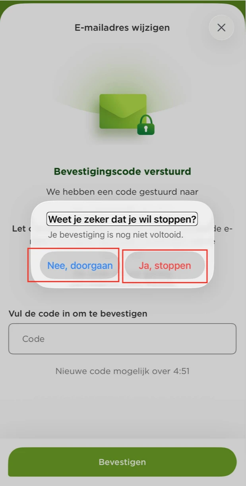
User story
Ik heb een visuele beperking. Wanneer ik tekst lees die nauwelijks afsteekt tegen de achtergrond, kan ik de woorden niet onderscheiden. Ik verwacht dat tekst altijd duidelijk leesbaar is tegen de achtergrond.
Oplossing
Pas de tekst- of achtergrondkleur aan zodat de contrastverhouding minimaal 4,5:1 bedraagt. Test het contrast met een tool zoals de Colour Contrast Analyser.
Op dit scherm bewegen de slides in de carrousel automatisch langer dan vijf seconden en zijn ze niet door de gebruiker te pauzeren, te stoppen of te verbergen.
User story
Ik raak afgeleid door beweging op een scherm. Wanneer ik het scherm bezoek en er beweegt iets continu, raak ik steeds de draad kwijt. Ik verwacht dat ik alle bewegende inhoud kan pauzeren of verbergen.
Oplossing
Voeg een zichtbare, bereikbare pauze-/stop-knop toe voor elke automatisch bewegende content die langer dan vijf seconden duurt. Een alternatief is om de beweging automatisch te stoppen na één keer afspelen, of te pauzeren zodra de bezoeker met iets op het scherm interacteert. Respecteer ook de systeeminstelling "Beweging verminderen" (iOS: UIAccessibility.isReduceMotionEnabled).
Op dit scherm staat een carrousel. De teksten, zoals "Ontdek het assortiment van jouw lokale PLUS winkel.", zijn geen koppen maar worden wel als kop aangeboden aan hulpsoftware. Schermlezergebruikers vertrouwen op kop-semantiek om de structuur van het scherm te begrijpen en om tussen secties te springen met de rotor (iOS) of reading controls (Android).
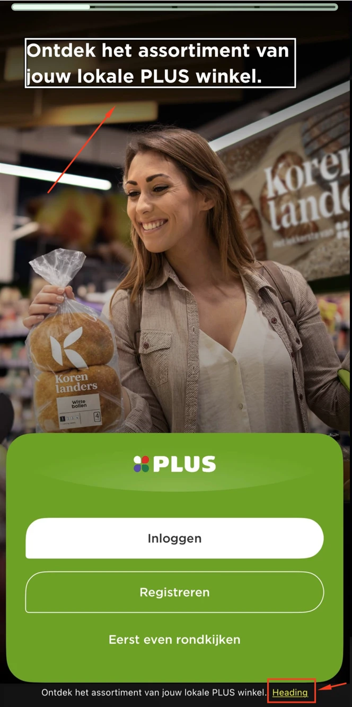
User story
Ik gebruik een schermlezer om door de app te navigeren via koppen met de rotor (iOS) of reading controls (Android). Ik verwacht dat alleen echte sectietitels als kop worden aangeboden. Wanneer gewone teksten — zoals beschrijvingen van carrousel-slides — als kop worden aangekondigd, wordt de schermstructuur misleidend en heeft kop-navigatie weinig nut meer.
Oplossing
Verwijder de kop-semantiek van teksten die geen echte kop zijn. In iOS UIKit verwijder je de .header accessibility trait van deze elementen. In SwiftUI verwijder je .isHeader uit de accessibility traits.
Op dit scherm staan bovenaan horizontale streepjes die het aantal slides in de carrousel aangeven. De niet-actieve streepjes zijn donkergrijs (#3B3938). Tegen de zwarte (#050402) achtergrond is het contrast 1,8:1. Interface-elementen en betekenisvolle grafische elementen moeten minimaal 3,0:1 contrast hebben tegen aangrenzende kleuren, zodat slechtziende bezoekers ze kunnen herkennen en lokaliseren.
User story
Ik heb een visuele beperking. Wanneer ik door een scherm navigeer, kan ik niet zien welke slide actief is als de slide-indicatoren onderling te weinig contrast hebben. Ik verwacht dat interface-elementen duidelijk afsteken tegen de achtergrond.
Oplossing
Pas de kleur van de niet-actieve streepjes of de achtergrond aan zodat het contrast minimaal 3,0:1 is. Doe dit voor elke status die informatie overbrengt (actief, niet-actief) en in zowel light- als dark mode.
#6 - Knoppen krijgen geen focus bij directe aanraking met VoiceOver
Op dit scherm kunnen knoppen zoals "Inloggen" niet direct geactiveerd worden via touch-exploration met VoiceOver aan. Wanneer een bezoeker met VoiceOver de knop direct op het scherm aanraakt, krijgt die geen focus en kan niet worden geactiveerd. De enige manier om de knop te bereiken is door met swipe-gebaren door alle elementen heen te navigeren tot de knop VoiceOver-focus krijgt, en dan dubbel te tikken. Daardoor zijn de knoppen niet volledig bedienbaar via standaard schermlezer-touchinteractie.
User story
Als VoiceOver-gebruiker verwacht ik dat interactieve elementen focus krijgen wanneer ik ze direct op het scherm aanraak. Zo kan ik de interface efficiënt verkennen en elementen activeren zonder dat ik door alle elementen heen hoef te swipen.
Oplossing
Zorg ervoor dat knoppen als "Inloggen" VoiceOver-focus krijgen wanneer ze direct op het scherm worden aangeraakt en dat ze daarna met de standaard dubbeltik kunnen worden geactiveerd.
Pad: Open de app > Activeer de knop "Eerst even rondkijken" op het "Start scherm" (niet ingelogde gebruiker) > Activeer de knop "Kies jouw supermarkt" op het volgende scherm
Op dit scherm opent na het activeren van de knop met de tekst "Zoeken" (met vergrootglas-icoon) het paneel "Winkel zoeken". Het zoekveld toont een "X"-knop zodra de bezoeker iets typt. Die knop wist de ingevoerde waarde, maar de toegankelijke naam ervan is "Winkel zoeken" — dat beschrijft de functie niet. Voor blinde bezoekers en schermlezergebruikers is daardoor niet duidelijk wat de knop doet. De toegankelijke naam moet kort en helder de actie van de knop beschrijven.
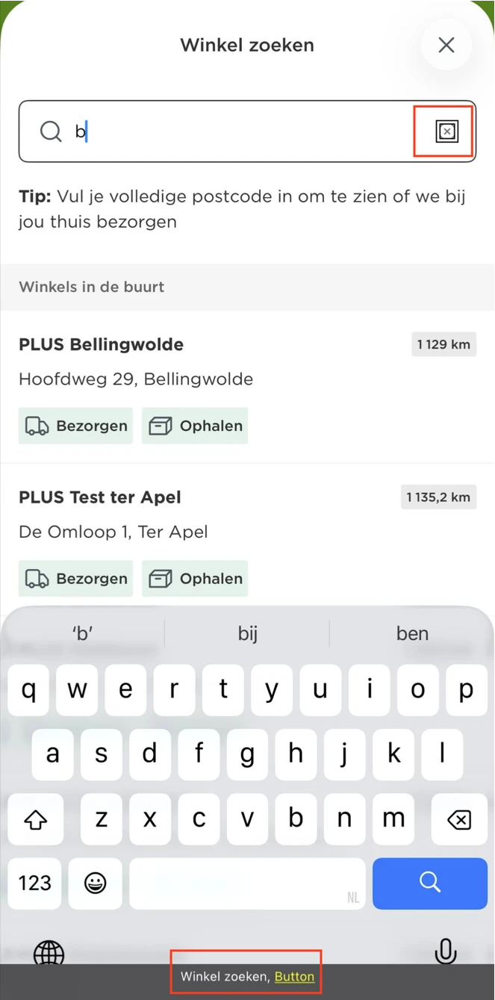
User story
Ik lees de content op het scherm met een schermlezer. Wanneer ik een knop tegenkom, hoor ik een naam die mij niet vertelt wat de knop doet. Ik verwacht dat elke knop een duidelijke naam heeft die de actie beschrijft.
Oplossing
Geef de "X"-knop een toegankelijke naam die de actie beschrijft, bijvoorbeeld "Wis zoekopdracht". Stel die in via accessibilityLabel (UIKit) of .accessibilityLabel(...) (SwiftUI).
Op dit scherm opent na het activeren van de knop met de tekst "Zoeken" (met vergrootglas-icoon) het paneel "Winkel zoeken". Daarin kan de bezoeker een optie kiezen uit de lijst met zoekresultaten onder "Winkels in de buurt", bijvoorbeeld "PLUS Bellingwolde". Deze resultaten worden echter niet met de juiste rol of accessibility trait aan hulpsoftware doorgegeven. Schermlezergebruikers horen daardoor alleen de tekst en weten niet dat het om interactieve elementen gaat die geactiveerd kunnen worden. Het doel en gedrag van deze elementen is daardoor onduidelijk.
User story
Ik lees de app met een schermlezer. Wanneer ik een element zonder rol tegenkom, weet ik niet wat het doet. Ik verwacht dat mijn schermlezer mij vertelt of het een knop, link of ander element is.
Oplossing
Geef elk interactief en structureel element een rol of trait. In iOS UIKit gebruik je accessibilityTraits (bijvoorbeeld .button, .link, .header, .image), in SwiftUI .accessibilityAddTraits(...).
#9 - Huidige status wordt niet doorgegeven aan hulpsoftware
Op dit scherm opent na het activeren van de knop met de tekst "Zoeken" (met vergrootglas-icoon) het paneel "Winkel zoeken". Daarin kan de bezoeker een optie kiezen uit de lijst met zoekresultaten onder "Winkels in de buurt", bijvoorbeeld "PLUS Bellingwolde". Na selectie verschijnt het paneel met een "i"-knop, die een ander paneel opent met detailinformatie over de geselecteerde winkel. Onder "Deze week geopend" is de huidige dag visueel herkenbaar gemarkeerd, maar dit wordt niet doorgegeven aan hulpsoftware. Schermlezergebruikers horen daardoor niet welke dag de huidige dag is.
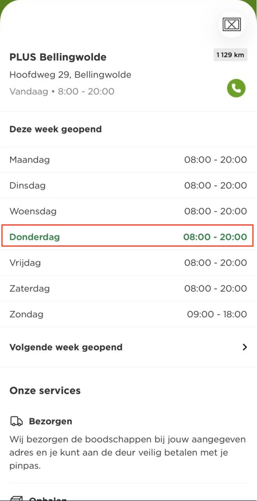
User story
Ik lees de app met een schermlezer. Wanneer ik een tabblad of optie tegenkom, kan ik niet horen of die op dit moment geselecteerd is. Ik verwacht dat mijn schermlezer duidelijk de huidige status aankondigt.
Oplossing
Werk de accessibility-status van het element bij zodat die weergeeft of het geselecteerd is. In iOS voeg je .selected toe aan accessibilityTraits, of stel je accessibilityValue in op een gelokaliseerde "Geselecteerd" / "Niet geselecteerd". Zorg dat de status meebeweegt met elke wijziging, zodat schermlezergebruikers altijd de actuele status horen.
Op dit scherm staan onderaan stippen die het aantal slides aangeven. De niet-actieve stippen zijn donkergroen (#3C6400). Tegen de groene (#6EA317) achtergrond is het contrast 2,3:1. Interface-elementen en betekenisvolle grafische elementen moeten een contrast van minimaal 3:1 hebben tegen aangrenzende kleuren, zodat slechtziende bezoekers ze kunnen herkennen en lokaliseren.
User story
Ik heb een visuele beperking. Wanneer ik door een scherm navigeer, kan ik niet zien welke slide actief is als de stippen onderling te weinig contrast hebben. Ik verwacht dat interface-elementen duidelijk afsteken tegen de achtergrond.
Oplossing
Pas de kleur van de stippen of de achtergrond aan zodat het contrast minimaal 3,0:1 is. Doe dit voor elke status die informatie overbrengt (actief, niet-actief) en in zowel light- als dark mode.
Op dit scherm staat naast de knop "Zoeken" een knop die een barcode-scanner opent, maar de toegankelijke naam ervan is "Zoeken" — dat beschrijft de functie niet. Voor blinde bezoekers en schermlezergebruikers is daardoor niet duidelijk wat de knop doet. De toegankelijke naam moet kort en helder de actie van de knop beschrijven. Hetzelfde probleem komt voor op het scherm "Winkelwagen".
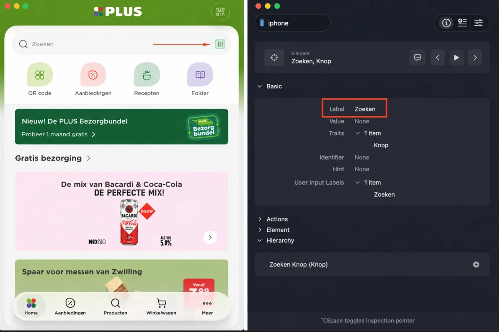
User story
Ik lees de app met een schermlezer. Wanneer ik een knop tegenkom, hoor ik een naam die mij niet vertelt wat de knop doet. Ik verwacht dat elke knop een duidelijke naam heeft die de actie beschrijft.
Oplossing
Geef de barcode-scanner-knop een toegankelijke naam die de actie beschrijft, bijvoorbeeld "Scan barcode". Zorg dat knoppen met verschillende acties geen gedeelde toegankelijke naam hebben.
Op dit scherm staat onder de knop "Zoeken" een knop "QR code" die het paneel "Scan de PLUS QR-code en spaar mee" opent. In dat paneel ziet de tekst "Scan de PLUS QR-code en spaar mee" er visueel uit als een kop, maar wordt niet als kop aan hulpsoftware doorgegeven. Schermlezergebruikers vertrouwen op kop-semantiek om de structuur van het scherm te begrijpen en om tussen secties te springen met de rotor (iOS) of reading controls (Android).
User story
Ik gebruik de app met een schermlezer. Wanneer ik door het scherm navigeer op koppen met de rotor (iOS) of reading controls (Android), verwacht ik dat alle visuele koppen ook als echte kop worden aangekondigd. Zo begrijp ik de structuur van het scherm en kan ik efficiënt navigeren.
Oplossing
Markeer de tekst "Scan de PLUS QR-code en spaar mee" als kop. In iOS UIKit voeg je de .header accessibility trait toe aan het element, in SwiftUI gebruik je .accessibilityAddTraits(.isHeader).
#13 - Toegankelijke naam bevat verborgen technische informatie
Op dit scherm staat onder de knop "Zoeken" een knop "QR code" die het paneel "Scan de PLUS QR-code en spaar mee" opent. In dat paneel staat een QR-code met daaronder een numerieke code. De visueel getoonde code bevat alleen de cijfers. Het element dat aan hulpsoftware wordt aangeboden bevat echter ook verborgen informatie in de toegankelijke naam, waaronder interne parameters en token-achtige data zoals "Redemption=true" en "OTP=…".
Schermlezergebruikers horen daardoor informatie die visueel niet op het scherm staat en die niet relevant is voor het begrijpen of gebruiken van de interface. Dat is verwarrend en zorgt voor inconsistentie tussen wat je ziet en wat je hoort.
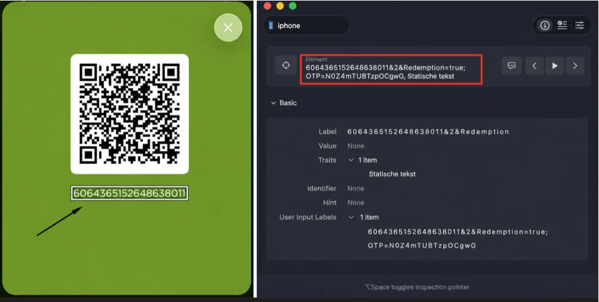
User story
Als schermlezergebruiker verwacht ik dat de informatie die mijn schermlezer voorleest overeenkomt met wat er op het scherm staat. Ik wil geen verborgen technische data, tokens of interne parameters horen die niet voor mij bedoeld zijn.
Oplossing
Zorg ervoor dat het element alleen de informatie bevat die ook visueel wordt getoond en voor de gebruiker bedoeld is. Verwijder verborgen technische parameters, tokenwaardes en interne data uit de toegankelijke naam.
Op dit scherm staat onder de knop "Zoeken" een knop "QR code" die het paneel "Scan de PLUS QR-code en spaar mee" opent. In dat paneel staat een knop met een "X"-icoon. Het witte icoon heeft een contrast van 1,4:1 tegen de groene achtergrond (#C8E299). Interface-elementen en betekenisvolle grafische elementen moeten minimaal 3,0:1 contrast hebben tegen aangrenzende kleuren, zodat slechtziende bezoekers ze kunnen herkennen en lokaliseren.
User story
Ik heb een visuele beperking. Wanneer ik de app gebruik, moeten knoppen en iconen duidelijk afsteken tegen de achtergrond, zodat ik interactieve elementen kan herkennen en lokaliseren. Als het contrast te laag is, zie ik de sluitknop misschien niet eens en weet ik niet dat die te activeren is.
Oplossing
Verhoog het contrast van het "X"-icoon ten opzichte van de groene achtergrond tot minimaal 3,0:1. Dit kan door de kleur van het icoon donkerder te maken of de achtergrondkleur aan te passen. Doe dit voor elke status (default, focused, selected) en in zowel light- als dark mode.
Op dit scherm zijn de teksten "Nu in de aanbieding!" en "UNEVEN W. Promotional ProdCoZM" geen koppen, maar worden ze wel als kop aan hulpsoftware doorgegeven. Er staat geen bijbehorende sectie of inhoud onder deze teksten. Schermlezergebruikers vertrouwen op kop-semantiek om de structuur van het scherm te begrijpen en om tussen secties te navigeren met de rotor (iOS) of reading controls (Android). Gewone teksten als kop aanbieden maakt de kopstructuur misleidend en kop-navigatie minder nuttig.
User story
Ik gebruik een schermlezer om door de app te navigeren via koppen met de rotor (iOS) of reading controls (Android). Ik verwacht dat alleen echte sectietitels als kop worden aangekondigd. Wanneer gewone teksten als kop worden aangekondigd zonder bijbehorende sectie-inhoud, wordt de schermstructuur verwarrend en heeft kop-navigatie weinig nut.
Oplossing
Verwijder de kop-semantiek van deze teksten. In iOS UIKit verwijder je de .header accessibility trait van deze elementen. In SwiftUI verwijder je .isHeader uit de accessibility traits.
Op dit scherm heeft de witte tekst "Spaar nu mee!" een contrast van 1,4:1 tegen de lichtgroene achtergrond (#CFE3A7). Een deel van de tekst is nauwelijks te onderscheiden tegen de achtergrondafbeelding. Normale tekst moet een contrast van minimaal 4,5:1 hebben, grote tekst (18pt en groter, of 14pt vetgedrukt en groter) minimaal 3,0:1.
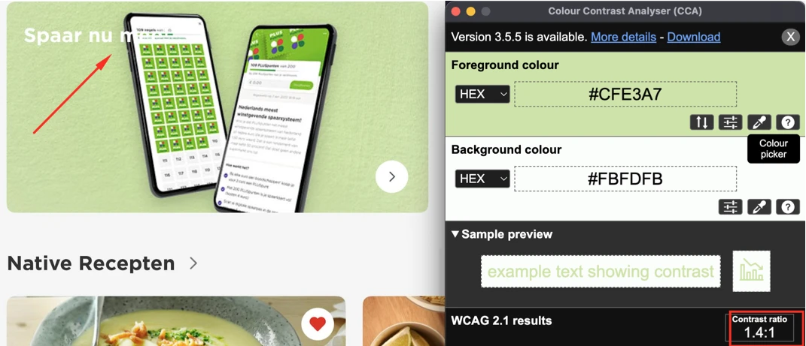
User story
Ik heb een visuele beperking. Wanneer ik tekst lees die nauwelijks afsteekt tegen de achtergrond, kan ik de woorden niet onderscheiden. Ik verwacht dat tekst altijd duidelijk leesbaar is tegen de achtergrond.
Oplossing
Pas de tekstkleur, de achtergrond, of beide aan zodat het contrast minimaal 4,5:1 is. Controleer het resultaat met een contrastchecker en verifieer voor elke staat waarin de tekst voorkomt (default, disabled, over afbeeldingen, op gekleurde achtergronden) en voor zowel light- als dark mode.
#17 - Element niet bedienbaar met extern toetsenbord
Op dit scherm bevat de sectie onder "Native Recepten" bij elk recept een knop met een hart-icoon om dat recept aan het kookboek toe te voegen. Deze knoppen kunnen echter niet geactiveerd worden met een extern toetsenbord — alleen door ze direct op het touchscreen aan te tikken. Bezoekers die afhankelijk zijn van een extern toetsenbord kunnen deze functie daardoor niet gebruiken. Hetzelfde probleem komt voor op het scherm "Recepten".
User story
Ik gebruik de app met een extern toetsenbord. Wanneer ik naar deze knop navigeer, kan ik die niet activeren met het toetsenbord. Ik verwacht dat elk interactief element bedienbaar is met standaard toetsenbordcommando's zoals Enter of de spatiebalk.
Oplossing
Zorg ervoor dat de hart-iconen ook met een extern toetsenbord (Enter of spatiebalk) geactiveerd kunnen worden. Dezelfde functionaliteit moet beschikbaar zijn zonder touch.
#18 - Content valt over elkaar heen bij grote tekstgrootte
Wanneer dit scherm wordt bekeken met de iOS-toegankelijkheidstekstgrootte op de hoogste stand, valt tekst over aangrenzende content en afbeeldingen heen. Promotieteksten lopen bijvoorbeeld over productafbeeldingen en aangrenzende interface-elementen, waardoor delen van de content moeilijk of niet meer te lezen zijn. Het vergroten van tekst mag de leesbaarheid of bruikbaarheid van content niet beperken. Alle tekst moet zichtbaar, leesbaar en goed gescheiden van omringende elementen blijven wanneer die wordt vergroot.
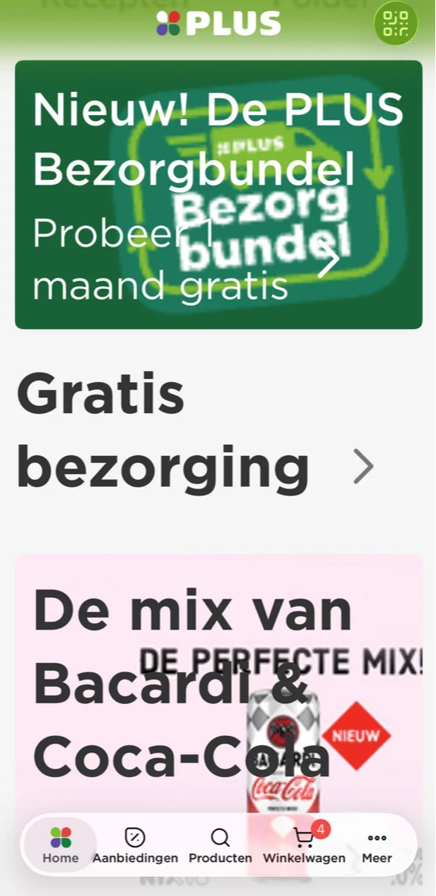
User story
Ik vergroot de tekst op mijn apparaat vanwege slechtziendheid. Wanneer ik grote toegankelijkheidstekstgroottes gebruik, verwacht ik dat alle tekst leesbaar blijft en niet over afbeeldingen of andere inhoud heen valt.
Oplossing
Zorg dat de interface zich aanpast aan grote toegankelijkheidstekstgroottes. Laat tekstcontainers verticaal meegroeien, ondersteun tekst die over meerdere regels loopt en vermijd lay-outs met een vaste hoogte die overlap of afkapping veroorzaken bij vergrote tekst.
Op dit scherm staat naast het tekstveld "Zoeken" een knop die een barcode-scanner opent. Deze knop heeft geen toegankelijke naam. De schermlezer kondigt alleen de rol aan (bijvoorbeeld "knop") maar geeft geen informatie over wat het element is of doet. Hetzelfde probleem komt voor op het scherm "Zoeken".
User story
Ik lees de app met een schermlezer. Wanneer ik een knop of link zonder naam tegenkom, hoor ik alleen 'knop' of 'link' zonder context. Ik verwacht dat elk element een duidelijke naam heeft die het doel uitlegt.
Oplossing
Geef de barcode-scanner-knop een toegankelijke naam via accessibilityLabel (UIKit) of .accessibilityLabel(...) (SwiftUI), bijvoorbeeld "Scan barcode". De naam moet kort het doel van het element beschrijven en aansluiten bij wat zichtbaar is.
#20 - Decoratieve afbeelding is niet verborgen voor schermlezers
Op dit scherm worden decoratieve afbeeldingen aan hulpsoftware doorgegeven en maken ze deel uit van de toegankelijke naam van interactieve elementen. De decoratieve afbeelding voor de categorie "Huishouden" heeft bijvoorbeeld de toegankelijke naam "category-huishouden". Daardoor wordt de toegankelijke naam van de knop "category-huishouden, Huishouden". Decoratieve afbeeldingen brengen geen betekenisvolle informatie over en horen niet door schermlezers te worden voorgelezen. Schermlezergebruikers horen daardoor overbodige, technische informatie die de aankondiging onnodig lang en moeilijk te begrijpen maakt.
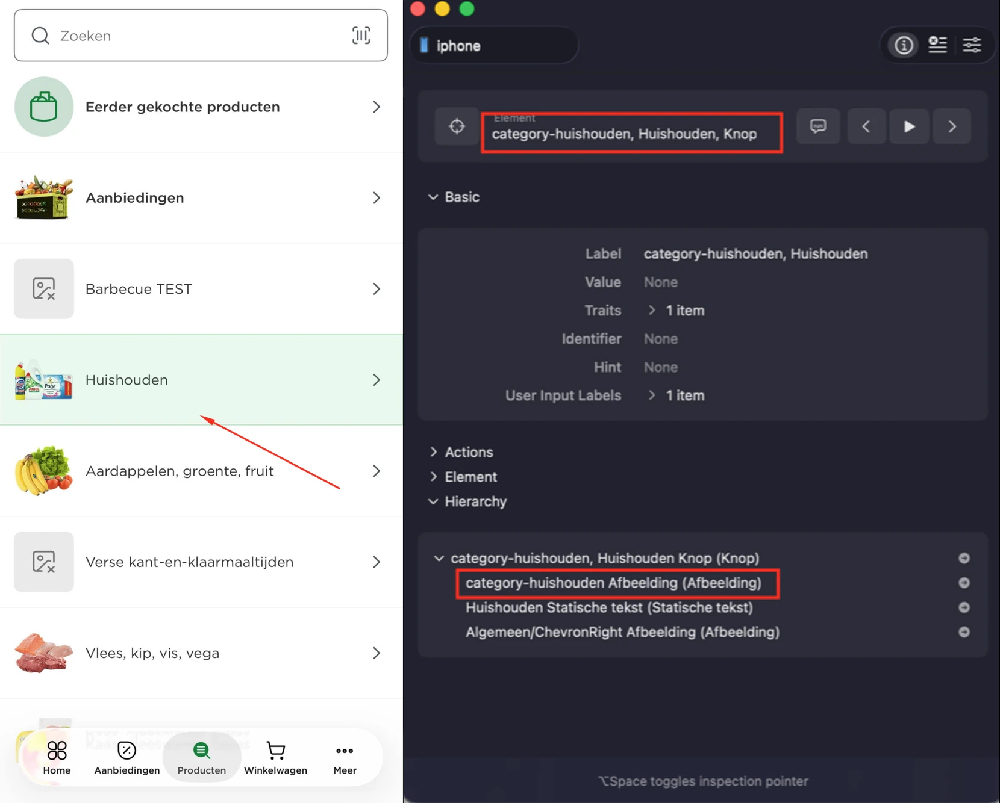
User story
Ik gebruik de app met een schermlezer. Wanneer ik door knoppen en andere elementen navigeer, verwacht ik dat alleen betekenisvolle informatie wordt voorgelezen. Decoratieve afbeeldingen moeten genegeerd worden, zodat de aankondigingen kort, duidelijk en begrijpelijk blijven.
Oplossing
Verberg de decoratieve afbeelding voor hulpsoftware door accessibilityElementsHidden op true te zetten (UIKit) of .accessibilityHidden(true) toe te voegen (SwiftUI).
Op dit scherm heeft de terug-knop (met pijl-icoon) geen toegankelijke naam. De schermlezer kondigt alleen de rol aan (bijvoorbeeld "knop") maar geeft geen informatie over wat het element is of doet. Hetzelfde probleem komt voor bij de "X"-knop die verschijnt zodra de bezoeker een waarde invoert in het zoekveld "Zoeken", bijvoorbeeld "cola".
User story
Ik lees de app met een schermlezer. Wanneer ik een knop of link zonder naam tegenkom, hoor ik alleen 'knop' of 'link' zonder context. Ik verwacht dat elk element een duidelijke naam heeft die het doel uitlegt.
Oplossing
Geef de terug-knop en de "X"-knop een toegankelijke naam via accessibilityLabel (UIKit) of .accessibilityLabel(...) (SwiftUI), bijvoorbeeld "Terug" en "Wis zoekopdracht". De naam moet kort het doel van het element beschrijven en aansluiten bij wat zichtbaar is.
#22 - Statusbericht wordt niet aangekondigd aan schermlezergebruikers
Op dit scherm verschijnt na een zoekopdracht een statusbericht bovenaan, bijvoorbeeld "396 resultaten", maar dat wordt niet door de schermlezer aangekondigd. Wanneer informatie op het scherm verschijnt of verandert — een bevestiging, een foutmelding, een laad-status — moeten schermlezergebruikers daarvan een aankondiging krijgen zonder dat ze focus naar het bericht hoeven te verplaatsen. Een vergelijkbaar probleem komt voor op het scherm "Producten": wanneer een bezoeker op een filter-knop tikt, wordt het aantal resultaten bijgewerkt, maar dit statusbericht wordt niet aangekondigd.
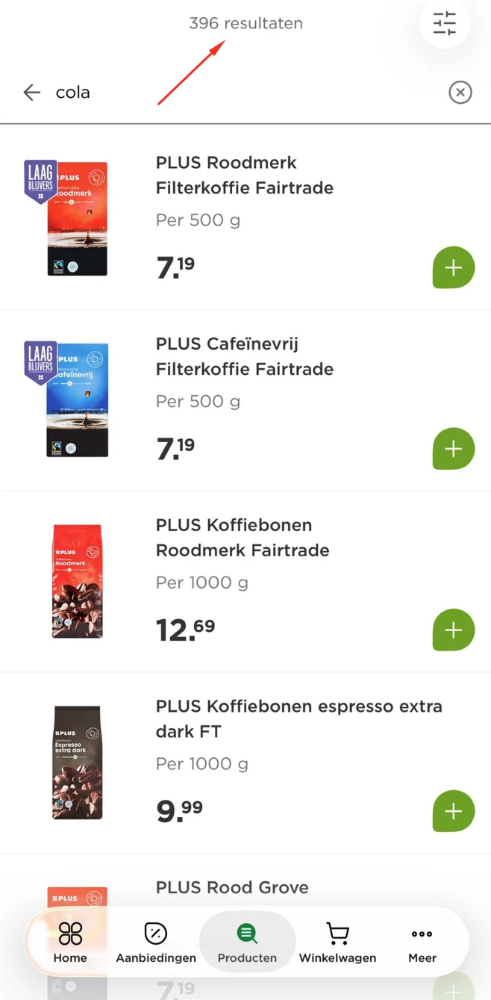
User story
Ik lees de app met een schermlezer. Wanneer er een statusbericht op het scherm verschijnt, kondigt mijn schermlezer dit niet aan. Ik verwacht dat statusberichten automatisch worden voorgelezen, zonder dat ik ernaar hoef te navigeren.
Oplossing
Kondig het statusbericht actief aan via hulpsoftware met UIAccessibility.post(notification: .announcement, argument: bericht) (UIKit) of de equivalente announcement in SwiftUI. Zo wordt het bericht automatisch voorgelezen zodra het verschijnt.
Op dit scherm kan de bezoeker bij een zoekresultaat met een schermlezer omhoog en omlaag swipen om de hoeveelheid van het geselecteerde item aan te passen. De hoeveelheid wordt visueel bijgewerkt — zowel binnen de itemsectie als op de winkelwagen-knop in het vaste voettmenu. Deze updates worden echter niet aangekondigd door de schermlezer. Daardoor weten schermlezergebruikers niet of de hoeveelheid is bijgewerkt en kennen ze de actuele hoeveelheid van het geselecteerde item of de bijgewerkte status van de winkelwagen niet. Hetzelfde probleem komt voor op het scherm "Winkelwagen", zie de sectie "Anders nog iets?".
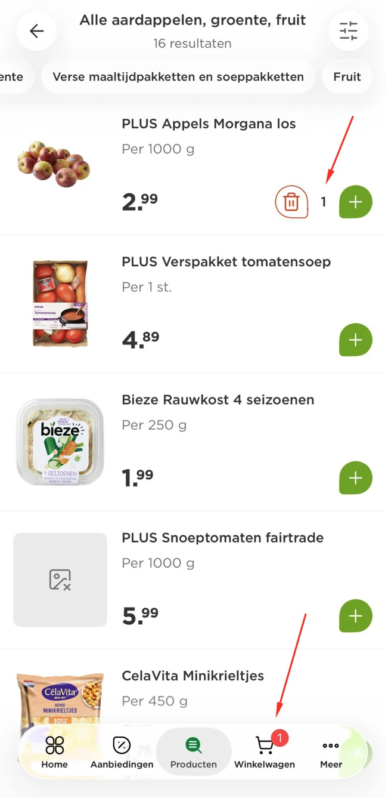
User story
Ik lees de app met een schermlezer. Wanneer er een statusbericht op het scherm verschijnt, kondigt mijn schermlezer dit niet aan. Ik verwacht dat statusberichten automatisch worden voorgelezen, zonder dat ik ernaar hoef te navigeren.
Oplossing
Kondig het statusbericht actief aan via hulpsoftware met UIAccessibility.post(notification: .announcement, argument: bericht) (UIKit) of de equivalente announcement in SwiftUI. Zo wordt het bericht automatisch voorgelezen zodra het verschijnt.
#24 - Element niet bedienbaar met extern toetsenbord
Op dit scherm bevat elk zoekresultaat een "+"-knop om het product aan de winkelwagen toe te voegen. Deze knoppen kunnen echter niet geactiveerd worden met een extern toetsenbord — alleen door ze direct op het touchscreen aan te tikken. Bezoekers die afhankelijk zijn van een extern toetsenbord kunnen deze functie daardoor niet gebruiken.
User story
Ik gebruik de app met een extern toetsenbord. Wanneer ik naar deze knop navigeer, kan ik die niet activeren met het toetsenbord. Ik verwacht dat elk interactief element bedienbaar is met standaard toetsenbordcommando's.
Oplossing
Zorg ervoor dat de "+"-knoppen ook met een extern toetsenbord (Enter of spatiebalk) geactiveerd kunnen worden. Dezelfde functionaliteit moet beschikbaar zijn zonder touch.
#25 - Geselecteerde hoeveelheid wordt niet doorgegeven aan hulpsoftware
Op dit scherm staat bij elk zoekresultaat een hoeveelheidscontrol waarmee de bezoeker het aantal geselecteerde producten kan aanpassen. Bij het product "PLUS Appels Morgana los" is bijvoorbeeld de geselecteerde hoeveelheid "1" zichtbaar nadat de bezoeker het in de winkelwagen heeft gelegd. Deze hoeveelheid wordt echter niet doorgegeven aan hulpsoftware zoals schermlezers.
Wanneer een schermlezergebruiker naar het element navigeert, worden alleen de productnaam, het gewicht en de prijs voorgelezen — de geselecteerde hoeveelheid niet. Daardoor weten schermlezergebruikers niet hoeveel items er op dit moment in hun winkelwagen liggen.
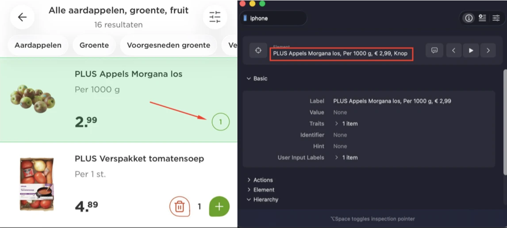
User story
Ik gebruik de app met een schermlezer. Wanneer ik naar een zoekresultaat navigeer, verwacht ik dat alle productinformatie inclusief de huidig geselecteerde hoeveelheid wordt voorgelezen. Zo begrijp ik wat de actuele status van mijn selectie is.
Oplossing
Zorg ervoor dat de huidig geselecteerde hoeveelheid wordt doorgegeven aan hulpsoftware als toegankelijke waarde of status. Werk het accessibility-label of accessibility-value bij elke wijziging van de hoeveelheid bij, zodat schermlezers altijd de actuele hoeveelheid voorlezen.
Op dit scherm fungeert de productafbeelding als een knop, maar deze knop heeft geen toegankelijke naam. De schermlezer kondigt alleen de rol aan maar geeft geen informatie over wat het element is of doet.
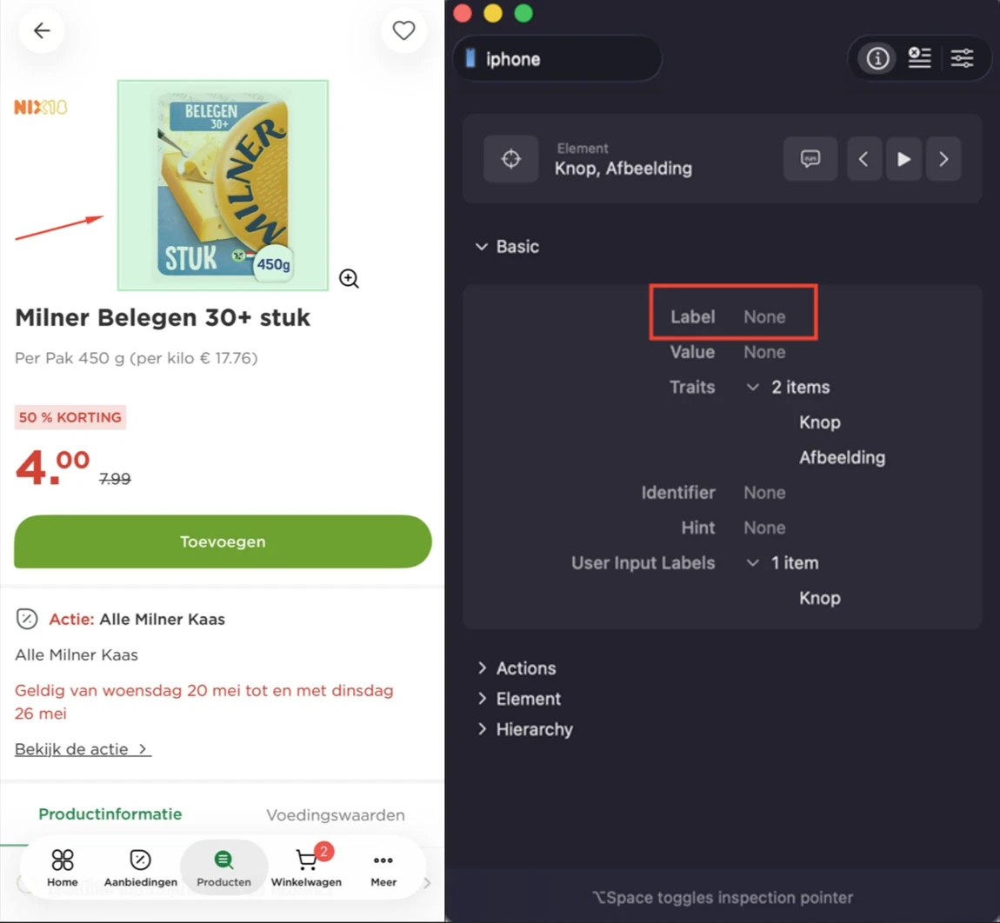
User story
Ik lees de app met een schermlezer. Wanneer ik een knop of link zonder naam tegenkom, hoor ik alleen 'knop' of 'link' zonder context. Ik verwacht dat elk element een duidelijke naam heeft die het doel uitlegt.
Oplossing
Geef de productafbeelding-knop een toegankelijke naam via accessibilityLabel (UIKit) of .accessibilityLabel(...) (SwiftUI), bijvoorbeeld de productnaam of "Vergroot productafbeelding".
Op dit scherm staan teksten die er visueel uitzien als kop, maar niet als kop aan hulpsoftware worden doorgegeven. Zie de tekst "Bevat" in de sectie die geopend wordt door de knop "Allergie informatie", teksten zoals "Wettelijke omschrijving" in de sectie van "Wettelijke informatie", teksten zoals "Contactnaam" in de sectie van "Contactgegevens leverancier" en op het scherm zelf "Aanbiedingen" en "Over onze prijs- en productinformatie". Schermlezergebruikers vertrouwen op kop-semantiek om de structuur van het scherm te begrijpen en om tussen secties te springen met de rotor (iOS) of reading controls (Android).
User story
Ik gebruik de app met een schermlezer. Wanneer ik door het scherm navigeer op koppen met de rotor (iOS) of reading controls (Android), verwacht ik dat alle visuele koppen ook als echte kop worden aangekondigd. Zo begrijp ik de structuur van het scherm en kan ik efficiënt navigeren.
Oplossing
Markeer deze elementen als kop zodat hulpsoftware ze correct aanbiedt. In iOS UIKit voeg je .header toe aan accessibilityTraits, in SwiftUI gebruik je .accessibilityAddTraits(.isHeader).
#28 - Items zijn visueel een lijst maar niet als lijst gemarkeerd
Op dit scherm worden "UL list 1" en "List 2" onder "Dit is een test voor een bullet list" visueel als lijst getoond, maar worden ze niet als lijst aan hulpsoftware doorgegeven. Hetzelfde geldt voor "Numbered list 1" en "Nummer 2". Schermlezergebruikers horen daardoor niet dat de items bij elkaar horen, hoeveel items er zijn, of op welk item ze zich bevinden.
User story
Ik lees de app met een schermlezer. Wanneer ik een groep items tegenkom, hoor ik niet hoeveel het er zijn of waar de groep begint en eindigt. Ik verwacht dat mijn schermlezer aankondigt dat het om een lijst gaat en hoeveel items die bevat.
Oplossing
Groepeer de lijst-items met de juiste lijst-semantiek. In iOS gebruik je bij voorkeur UICollectionView of UITableView — die geven lijst-semantiek automatisch door. Voor custom containers stel je accessibilityContainerType = .list in. Zo kondigt VoiceOver het aantal items en de positie aan.
#29 - Doorgehaalde prijs wordt niet doorgegeven aan hulpsoftware
Op dit scherm toont het product zowel een oorspronkelijke prijs "7.99" als een verlaagde prijs "€ 4,00". Visueel is de oorspronkelijke prijs doorgehaald om aan te geven dat dit niet meer de actuele prijs is. Dit onderscheid wordt echter niet doorgegeven aan hulpsoftware.
Schermlezergebruikers horen daardoor twee prijzen zonder te begrijpen welke de oorspronkelijke prijs is en welke de aanbiedingsprijs.
User story
Ik gebruik de app met een schermlezer. Wanneer een product in de aanbieding is, verwacht ik dat mijn schermlezer duidelijk maakt welke prijs de oorspronkelijke prijs is en welke de verlaagde prijs. Zo begrijp ik de aanbieding correct.
Oplossing
Zorg ervoor dat de oorspronkelijke en de verlaagde prijs programmatisch van elkaar te onderscheiden zijn voor hulpsoftware. Voeg toegankelijke tekst of een accessibility-label toe waarin expliciet staat welke prijs de oorspronkelijke is en welke de aanbiedingsprijs, in plaats van alleen te vertrouwen op visuele doorhaling.
#30 - Informatief icoon heeft geen tekstalternatief
Op dit scherm staan in het tabblad "Voedingswaarden" bij de items "Waarvan verzadigd vet" en "Waarvan suikers" pijl-iconen die aangeven dat dit subitems zijn van "Vet" en "Koolhydraten". Deze iconen hebben geen tekstalternatief en de hiërarchische relatie wordt niet doorgegeven aan hulpsoftware. Schermlezergebruikers kunnen de informatie die deze iconen overbrengen daardoor niet waarnemen. Alle niet-decoratieve iconen moeten een tekstalternatief hebben dat dezelfde betekenis overbrengt als het visuele element.
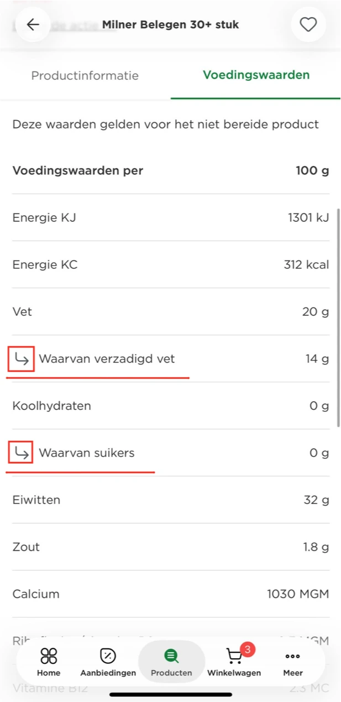
User story
Ik gebruik de app met een schermlezer. Wanneer informatie visueel gegroepeerd of inspringend wordt getoond om hiërarchie of een relatie aan te geven, verwacht ik dat die structuur ook programmatisch wordt doorgegeven. Zo begrijp ik welke items bij elkaar horen.
Oplossing
Zorg dat de visueel zichtbare hiërarchische relaties ook aan hulpsoftware worden doorgegeven. Neem de relatie tussen hoofdcategorie en subitem op in de toegankelijke tekst of het accessibility-label, of implementeer een semantische structuur die duidelijk maakt dat deze items bij de bovenliggende voedingscategorieën horen.
Wanneer dit scherm wordt bekeken met de iOS-toegankelijkheidstekstgrootte op een hoge stand, worden tab-labels afgekapt. De teksten "Productinformatie" en "Voedingswaarden" worden bijvoorbeeld ingekort tot "Productin..." en "Voedings...". Slechtziende bezoekers kunnen daardoor niet goed bepalen waar elk tabblad voor staat. Vergrote tekst moet volledig leesbaar en begrijpelijk blijven, zonder verlies van informatie.
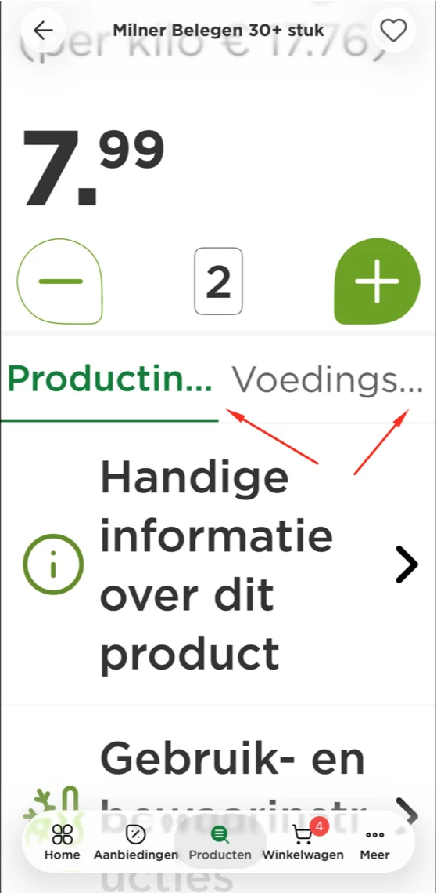
User story
Ik vergroot de tekst op mijn apparaat vanwege slechtziendheid. Wanneer ik grote toegankelijkheidstekstgroottes gebruik, verwacht ik dat tab-labels en andere interface-tekst volledig zichtbaar en begrijpelijk blijven.
Oplossing
Zorg dat tab-labels zich aanpassen aan grote toegankelijkheidstekstgroottes. Laat labels over meerdere regels lopen, dynamisch in grootte aanpassen of zorg voor voldoende ruimte, zodat de volledige tekst zichtbaar en begrijpelijk blijft wanneer die wordt vergroot.
Onder "Jouw bestelling" staat een sectie met verborgen content met het label "Korting producten" en een pijl-icoon ernaast. Beide elementen (de tekst en het icoon) openen en sluiten verborgen content, maar geven de knop-rol niet door aan hulpsoftware. Schermlezergebruikers kunnen deze elementen daardoor niet als interactieve controls herkennen. Zonder de juiste rol kondigt hulpsoftware de elementen niet als knop aan, waardoor de accordeon voor schermlezergebruikers moeilijk tot niet bruikbaar is. Daarnaast mist de knop met het pijl-icoon een toegankelijke naam. Ook is de open/gesloten status visueel zichtbaar, maar wordt die niet programmatisch doorgegeven aan schermlezers. Dezelfde problemen komen voor op het scherm "Checkout proces" in de stap "Bestelling bevestigen".
User story
Ik navigeer met een schermlezer. Wanneer ik een accordeon tegenkom, vertelt mijn schermlezer niet dat ik een knop kan activeren om de sectie te openen. Ik verwacht dat mijn schermlezer elke accordeon-toggle duidelijk aankondigt als een knop die ik kan activeren.
Oplossing
Zorg dat de elementen die secties met verborgen content openen en sluiten de juiste knop-rol of accessibility trait aan hulpsoftware doorgeven. Implementeer de accordeon-trigger bij voorkeur als één toegankelijke knop in plaats van losse elementen voor de tekst en het pijl-icoon. Geef de pijl-knop een betekenisvolle toegankelijke naam als die los focusbaar blijft. Geef de uitgeklapt/ingeklapt-status ook programmatisch door: in iOS UIKit voeg je de .button accessibility trait toe en werk je accessibilityValue bij om de status te communiceren; in SwiftUI gebruik je .accessibilityAddTraits(.isButton) met .accessibilityValue(...).
Dit scherm bevat een formulier in meerdere stappen. In stap "Gegevens" wordt de groep invoervelden visueel ingeleid met het groepslabel "Geboortedatum", maar dit groepslabel is niet programmatisch gekoppeld aan de individuele velden. Schermlezergebruikers horen het label van elk veld, maar nooit het overkoepelende groepslabel.
User story
Ik gebruik de app met een schermlezer. Wanneer ik gegroepeerde formuliervelden invul, verwacht ik dat mijn schermlezer zowel de individuele veldlabels als het bijbehorende groepslabel aankondigt. Zo begrijp ik de context van de gevraagde informatie.
Oplossing
Zorg ervoor dat het groepslabel "Geboortedatum" programmatisch gekoppeld is aan de bijbehorende invoervelden. In iOS kun je de accessibilityLabel van de overkoepelende container instellen op het groepslabel, of het groepslabel opnemen in het accessibility-label van elk afzonderlijk veld.
Dit scherm bevat een formulier in meerdere stappen. In stap "Gegevens" staan drie invoervelden onder "Geboortedatum". Deze velden hebben de placeholderteksten "Dag", "Maand" en "Jaar", maar geen permanent zichtbaar label — de placeholder doet dienst als label. Invoervelden moeten een label hebben dat altijd zichtbaar is. Een placeholder vervult die rol niet, omdat hij verdwijnt zodra de bezoeker begint te typen.
User story
Ik gebruik de app met een cognitieve beperking, slechtziendheid of dyslexie. Wanneer ik in een formulierveld begin te typen, moet ik nog steeds weten welke informatie verwacht wordt. Ik verwacht dat elk invoerveld een zichtbaar label heeft dat altijd beschikbaar blijft en niet verdwijnt tijdens het typen.
Oplossing
Voeg een permanent zichtbaar label toe bij het invoerveld.
#35 - Toegankelijke naam beschrijft niet het doel van het invoerveld
Dit scherm bevat een formulier in meerdere stappen. In stap "Gegevens" staan drie invoervelden onder "Geboortedatum". Wanneer deze velden ingevulde waardes bevatten, bestaat de toegankelijke naam die de schermlezer voorleest alleen uit deze ingevulde waarde, bijvoorbeeld "11". De toegankelijke naam bevat niet het zichtbare label en maakt ook niet duidelijk of het veld voor de dag, maand of jaar is.
Schermlezergebruikers kunnen daardoor tijdens het navigeren niet bepalen waar elk veld voor bedoeld is. De toegankelijke naam van een formulierveld moet duidelijk beschrijven welke invoer wordt verwacht en moet het zichtbare label of een gelijkwaardige beschrijving bevatten.
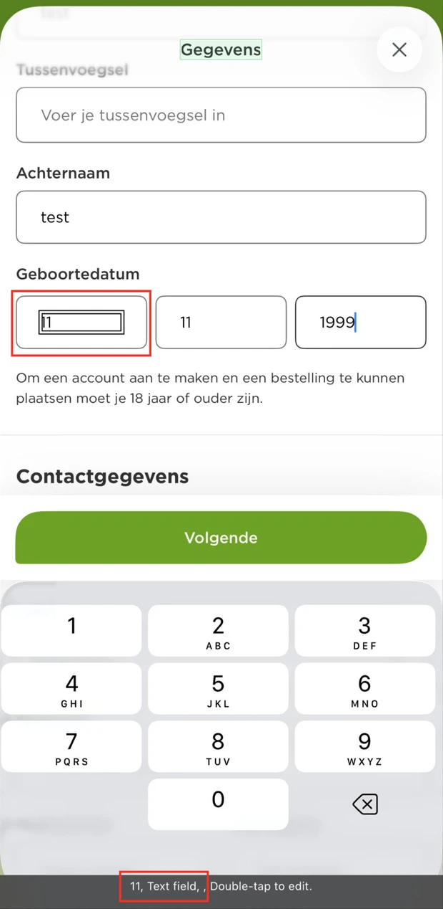
User story
Ik gebruik de app met een schermlezer. Wanneer ik door formuliervelden navigeer, verwacht ik dat elk veld duidelijk maakt waar het voor bedoeld is, bijvoorbeeld of het om de dag, maand of jaar gaat. Als ik alleen de ingevulde waarde hoor, weet ik niet welke informatie het veld vertegenwoordigt.
Oplossing
Zorg dat elk datum-invoerveld een duidelijke toegankelijke naam heeft die het doel van het veld beschrijft. Neem labels als "Dag", "Maand" en "Jaar" op in de toegankelijke naam van het bijbehorende veld, zodat hulpsoftware zowel het doel als de ingevulde waarde voorleest.
#36 - Foutmelding wordt niet aangekondigd aan schermlezergebruikers
Dit scherm bevat een formulier in meerdere stappen. In stap "Gegevens" verschijnen na een onjuiste invoer en het activeren van de knop "Volgende" foutmeldingen onder de invoervelden. Als de bezoeker de invoer corrigeert maar de waarde nog steeds ongeldig is, wijzigen de foutteksten of verschijnen er nieuwe meldingen voor de resterende fouten. Deze dynamisch verschijnende en bijgewerkte foutmeldingen worden echter niet aangekondigd door schermlezers. Daardoor weten schermlezergebruikers mogelijk niet dat er nieuwe validatie-feedback is verschenen of dat de foutstatus is veranderd. Wanneer informatie op het scherm wijzigt — zoals validatie-feedback, bevestigingen of status-updates — moeten hulpsoftware deze wijzigingen automatisch aankondigen zonder dat de bezoeker de focus naar het bericht hoeft te verplaatsen.
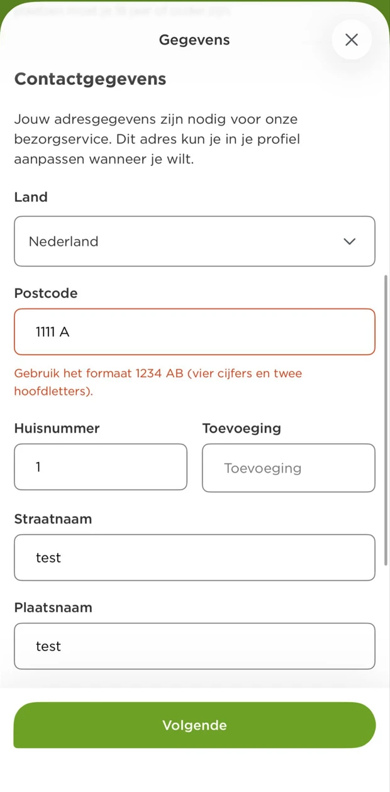
User story
Ik lees de app met een schermlezer. Wanneer er een statusbericht op het scherm verschijnt, kondigt mijn schermlezer dit niet aan. Ik verwacht dat statusberichten automatisch worden voorgelezen, zonder dat ik ernaar hoef te navigeren.
Oplossing
Zorg dat dynamisch verschijnende en bijgewerkte foutmeldingen aan hulpsoftware worden doorgegeven als statusbericht, zodat schermlezers ze automatisch aankondigen. Post in iOS een accessibility-notificatie zodra een validatiemelding verschijnt of wijzigt, bijvoorbeeld met UIAccessibility.post(notification: .announcement, argument: foutTekst).
#37 - Disabled-status wordt niet doorgegeven aan hulpsoftware
Op dit scherm, in stap "Moment reserveren", ziet de radio-knop "Bezorgen op adres" er visueel uitgeschakeld uit (uitgegrijsd), maar de disabled-status wordt niet doorgegeven aan hulpsoftware. Schermlezergebruikers horen niet dat de knop niet te activeren is.
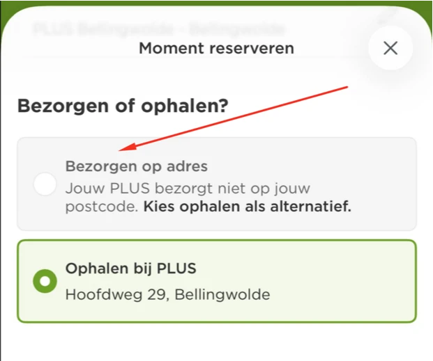
User story
Ik lees de app met een schermlezer. Wanneer ik bij een knop kom, kan ik niet horen of die uitgeschakeld is. Ik verwacht dat mijn schermlezer mij vertelt wanneer een knop niet beschikbaar is.
Oplossing
Wanneer een element uitgeschakeld is, werk dan ook de accessibility-status bij. In iOS voeg je .notEnabled toe aan accessibilityTraits — of gebruik je standaard controls met isEnabled = false, die dit automatisch doen. Zorg dat de visuele disabled-status en de accessibility-status altijd synchroon lopen.
#38 - Checkboxes hebben onduidelijke en identieke toegankelijke namen
Op dit scherm staan in stap "Voorkeuren" meerdere checkboxes. Deze checkboxes hebben allemaal dezelfde toegankelijke naam: "Spaar mee!". Schermlezergebruikers kunnen daardoor het doel van de afzonderlijke checkboxes niet onderscheiden en weten niet wat de verschillen tussen de beschikbare opties zijn.
Labels van interactieve elementen moeten duidelijk en ondubbelzinnig beschrijven waar elk element voor staat.
Dit faalt ook 2.5.3, omdat de toegankelijke namen niet de zichtbare tekst van de individuele opties bevatten. Gebruikers van spraakbediening (Voice Control of Voice Access) vertrouwen op de zichtbare labels om elementen met spraak te activeren. Als het uitgesproken commando niet overeenkomt met de zichtbare tekst, kunnen gebruikers de juiste checkbox niet aansturen. Ook schermlezergebruikers ervaren een verschil tussen wat ze zien en wat ze horen.
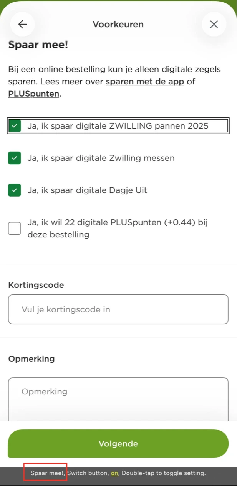
User story
Ik gebruik de app met een schermlezer of spraakbedieningssoftware. Wanneer ik door checkboxes navigeer, verwacht ik dat elke checkbox een unieke en beschrijvende naam heeft die overeenkomt met de zichtbare tekst. Zo begrijp ik de beschikbare opties en kan ik de juiste optie activeren met spraak of via mijn schermlezer.
Oplossing
Geef elke checkbox een unieke en beschrijvende toegankelijke naam die de zichtbare tekst van de optie bevat. In iOS stel je per checkbox de juiste accessibilityLabel in, zodat die overeenkomt met het zichtbare label.
Op dit scherm, in stap "Bestelling bevestigen", zien de volgende teksten er visueel uit als kop, maar worden ze niet als kop aan hulpsoftware doorgegeven: "Bezorging door PLUS Bellingwolde", "Contactgegevens", "Adres" en andere. Schermlezergebruikers vertrouwen op kop-semantiek om de structuur van het scherm te begrijpen en om tussen secties te springen met de rotor (iOS) of reading controls (Android).
User story
Ik gebruik de app met een schermlezer. Wanneer ik door het scherm navigeer op koppen met de rotor (iOS) of reading controls (Android), verwacht ik dat alle visuele koppen ook als echte kop worden aangekondigd. Zo begrijp ik de structuur van het scherm en kan ik efficiënt navigeren.
Oplossing
Markeer deze elementen als kop zodat hulpsoftware ze correct aanbiedt. In iOS UIKit voeg je .header toe aan accessibilityTraits, in SwiftUI gebruik je .accessibilityAddTraits(.isHeader).
Op dit scherm zien de volgende teksten er visueel uit als kop, maar worden ze niet als kop aan hulpsoftware doorgegeven: "PLUSpunten", "Dagje Uit", "Wedstrijdkaarten winactie" en andere. Schermlezergebruikers vertrouwen op kop-semantiek om de structuur van het scherm te begrijpen en om tussen secties te springen met de rotor (iOS) of reading controls (Android).
User story
Ik gebruik de app met een schermlezer. Wanneer ik door het scherm navigeer op koppen met de rotor (iOS) of reading controls (Android), verwacht ik dat alle visuele koppen ook als echte kop worden aangekondigd. Zo begrijp ik de structuur van het scherm en kan ik efficiënt navigeren.
Oplossing
Markeer deze elementen als kop zodat hulpsoftware ze correct aanbiedt. In iOS UIKit voeg je .header toe aan accessibilityTraits, in SwiftUI gebruik je .accessibilityAddTraits(.isHeader).
Op dit scherm zien de volgende teksten er visueel uit als kop, maar worden ze niet als kop aan hulpsoftware doorgegeven: "PLUSpunten" en "Hoe werkt het?". Schermlezergebruikers vertrouwen op kop-semantiek om de structuur van het scherm te begrijpen en om tussen secties te springen met de rotor (iOS) of reading controls (Android).
User story
Ik gebruik de app met een schermlezer. Wanneer ik door het scherm navigeer op koppen met de rotor (iOS) of reading controls (Android), verwacht ik dat alle visuele koppen ook als echte kop worden aangekondigd. Zo begrijp ik de structuur van het scherm en kan ik efficiënt navigeren.
Oplossing
Markeer deze elementen als kop zodat hulpsoftware ze correct aanbiedt. In iOS UIKit voeg je .header toe aan accessibilityTraits, in SwiftUI gebruik je .accessibilityAddTraits(.isHeader).
#42 - Items zijn visueel een lijst maar niet als lijst gemarkeerd
Op dit scherm staat onder "Hoe werkt het?" een lijst met 4 items, maar deze items worden niet als lijst aan hulpsoftware doorgegeven. Schermlezergebruikers horen daardoor niet dat de items bij elkaar horen, hoeveel items er zijn, of op welk item ze zich bevinden.
User story
Ik lees de app met een schermlezer. Wanneer ik een groep items tegenkom, hoor ik niet hoeveel het er zijn of waar de groep begint en eindigt. Ik verwacht dat mijn schermlezer aankondigt dat het om een lijst gaat en hoeveel items die bevat.
Oplossing
Groepeer de lijst-items met de juiste lijst-semantiek. In iOS gebruik je bij voorkeur UICollectionView of UITableView — die geven lijst-semantiek automatisch door. Voor custom containers stel je accessibilityContainerType = .list in. Zo kondigt VoiceOver het aantal items en de positie aan.
#43 - Decoratieve afbeelding is niet verborgen voor schermlezers
Op dit scherm worden onder "PLUSpunten" decoratieve afbeeldingen aan hulpsoftware doorgegeven met de tekstalternatieven "DigitaalSparen/Collect" en "DigitaalSparen/StampOverview". Decoratieve afbeeldingen brengen geen betekenisvolle informatie over en horen niet door schermlezers te worden voorgelezen.
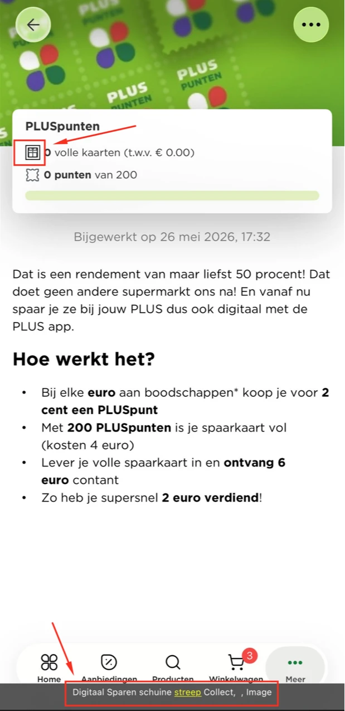
User story
Ik gebruik de app met een schermlezer. Wanneer ik door de "PLUSpunten"-sectie navigeer, verwacht ik dat alleen betekenisvolle informatie wordt voorgelezen. Decoratieve afbeeldingen moeten genegeerd worden, zodat de schermlezer-aankondigingen kort, duidelijk en begrijpelijk blijven.
Oplossing
Verberg de decoratieve afbeeldingen voor hulpsoftware door isAccessibilityElement = false te zetten (UIKit) of .accessibilityHidden(true) toe te voegen (SwiftUI).
Op dit scherm heeft de grijze tekst (#868686) "Bijgewerkt op 26 mei 2026, 17:36" een contrast van 3,6:1 tegen de witte achtergrond. Normale tekst moet een contrast van minimaal 4,5:1 hebben, grote tekst (18pt en groter, of 14pt vetgedrukt en groter) minimaal 3,0:1.
User story
Ik heb een visuele beperking. Wanneer ik tekst lees die nauwelijks afsteekt tegen de achtergrond, kan ik de woorden niet onderscheiden. Ik verwacht dat tekst altijd duidelijk leesbaar is tegen de achtergrond.
Oplossing
Pas de tekstkleur, de achtergrond, of beide aan zodat het contrast minimaal 4,5:1 is. Controleer het resultaat met een contrastchecker en verifieer voor elke staat waarin de tekst voorkomt (default, disabled, over afbeeldingen, op gekleurde achtergronden) en voor zowel light- als dark mode.
Op dit scherm heeft de "Kookstand"-toggle in de uit-staat een contrast van 1,8:1 tussen het witte schuifje en de grijze (#BFBFC0) achtergrond. Interface-elementen en betekenisvolle grafische elementen moeten minimaal 3,0:1 contrast hebben tegen aangrenzende kleuren, zodat slechtziende bezoekers ze kunnen herkennen en lokaliseren.
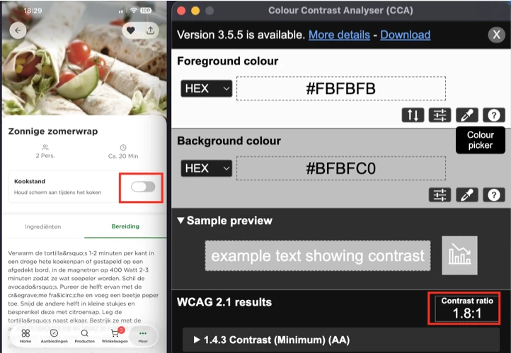
User story
Ik heb een visuele beperking. Wanneer ik door een scherm navigeer, kan ik niet zien of een toggle aan of uit staat als de toggle te weinig contrast heeft met de achtergrond. Ik verwacht dat interface-elementen duidelijk afsteken.
Oplossing
Pas de kleur van de toggle of de achtergrond aan zodat het contrast minimaal 3,0:1 is. Doe dit voor elke staat die informatie overbrengt (aan, uit) en in zowel light- als dark mode.
Pad (ingelogde gebruiker): Selecteer "Meer" > "Mijn PLUS account"
Disclaimer:
Dit scherm bevat een groep invoervelden onder "Geboortedatum". De toegankelijkheidsissues die voor deze velden zijn vastgesteld, zijn dezelfde als die al beschreven zijn in de sectie van het "Checkout proces"-scherm.
Op dit scherm zien de volgende teksten er visueel uit als kop, maar worden ze niet als kop aan hulpsoftware doorgegeven: "E-mailadres", "Bezorgadres" en "Telefoonnummer". Schermlezergebruikers vertrouwen op kop-semantiek om de structuur van het scherm te begrijpen en om tussen secties te springen met de rotor (iOS) of reading controls (Android).
User story
Ik gebruik de app met een schermlezer. Wanneer ik door het scherm navigeer op koppen met de rotor (iOS) of reading controls (Android), verwacht ik dat alle visuele koppen ook als echte kop worden aangekondigd. Zo begrijp ik de structuur van het scherm en kan ik efficiënt navigeren.
Oplossing
Markeer deze elementen als kop zodat hulpsoftware ze correct aanbiedt. In iOS UIKit voeg je .header toe aan accessibilityTraits, in SwiftUI gebruik je .accessibilityAddTraits(.isHeader).
Over dit onderzoek
Leeswijzer
Onze rapporten zijn anders. Bij het bespreken van de gevonden problemen volgen wij niet de structuur van de norm, maar die van jouw website of app. Hierdoor kun je gewoon per pagina of scherm aan de slag gaan. Wel zo makkelijk! Je vindt verderop een overzicht van alle pagina’s met problemen.
We geven je bij elk gevonden issue een paar voorbeelden, maar niet een complete lijst. Controleer zelf of het probleem ook nog op andere plekken voorkomt. Zie het rapport als een leidraad.
Gebruikte norm
Dit onderzoek laat zien in hoeverre de app op dit moment voldoet aan WCAG 2.1, niveau A en AA. WCAG staat voor Web Content Accessibility Guidelines. Dit is de internationale norm voor digitale toegankelijkheid. De Europese norm EN 301 549 bevat alle eisen van WCAG op niveau A en AA.
In dit rapport hebben we korte beschrijvingen van de succescriteria uit de norm opgenomen, met een algemene uitleg erbij. Wil je ze helemaal lezen? Bekijk dan de documentatie van WCAG.
Gebruikte onderzoeksmethode
We gebruiken de onderzoeksmethode WCAG-EM van het W3C. Het proces ziet er als volgt uit:
vaststellen wat binnen en buiten scope valt
vaststellen welke technologieën zijn gebruikt
steekproef (sample) samenstellen
steekproef onderzoeken
gevonden issues beschrijven
Het grootste deel van het onderzoek doen we met de hand. Voor een deel van de toegankelijkheidseisen gebruiken we automatische tools als ondersteuning, zoals axe-core en Chrome Developer Tools.
Belangrijk om te weten
Dit rapport helpt je om de toegankelijkheid van je app te verbeteren. Maar let op: het is geen definitieve, volledige lijst van alle aanwezige toegankelijkheidsproblemen. Dat zit zo:
Het is een steekproef
Ten eerste is het onderzoek gebaseerd op een steekproef. Die is op een betrouwbare manier genomen, en de meeste problemen zullen daardoor zeker aan het licht komen. Toch kan een probleem net buiten de steekproef vallen. Bij een volgend onderzoek kan het wel ontdekt worden.
Op basis van falsificatie
We beoordelen vanuit het principe van falsificatie. Dat houdt in dat we proberen te bewijzen dat iets niet waar is, in plaats van te bevestigen dat het klopt. ‘Voldoet’ betekent daarom dat we geen reden hebben gevonden om een punt af te keuren. Maar als we later wél een reden vinden, kan het alsnog worden afgekeurd.
Voortschrijdend inzicht
Het komt voor dat de beoordeling van een succescriterium op detailniveau verandert. De norm beschrijft namelijk niet élk mogelijk scenario. Samen met andere onderzoeksbureaus overleggen we hoe we met bepaalde situaties omgaan. Zo kan iets dat nu wordt afgekeurd, soms bij een volgend onderzoek worden goedgekeurd en andersom.
Oplossen leidt tot nieuw probleem
Ten slotte kan het gebeuren dat bij het oplossen van een probleem onbedoeld een nieuw toegankelijkheidsprobleem ontstaat. Dat komt dan bij een volgend onderzoek pas naar voren.
Hoe werkt dit rapport?
Bevindingen bekijken en filteren
Alle gevonden toegankelijkheidsproblemen staan onder Gevonden problemen. Je kunt de bevindingen filteren op:
Impact (Groot, Medium, Klein, Advies) — hoe ernstig is het probleem voor de gebruiker?
Type (Content, Techniek) — moet de inhoud of de techniek worden aangepast?
Status (Open, Opgelost) — welke problemen zijn al verholpen?
Voortgang bijhouden
Je kunt je voortgang op twee manieren bijhouden:
CSV-export — exporteer alle bevindingen als CSV-bestand en laad het in een (online) spreadsheet om met je team samen te werken.
Jira-export — exporteer alle bevindingen als Jira-compatibel CSV-bestand. Importeer het via Jira > Issues > Import issues from CSV. Bevindingen worden aangemaakt als bugs met prioriteit op basis van impact.
Registreer in de browser — activeer deze optie om per bevinding bij te houden of het is opgelost. Je voortgang wordt opgeslagen in je browser. Niemand anders kan je resultaat zien. Let op: de voortgang is gekoppeld aan je browser. Als je een andere browser of een ander apparaat gebruikt, begint de telling opnieuw.
Plan van aanpak — download een geprioriteerd plan van aanpak om de gevonden problemen stap voor stap op te lossen. Dit is beschikbaar bij audits vanaf maart 2026.
Link naar een specifieke bevinding delen
Bij elke bevinding verschijnt een link-icoon wanneer je er met de muis overheen gaat. Klik op dit icoon om de directe link naar die bevinding te kopiëren. Je kunt deze link plakken in een e-mail of chatbericht, bijvoorbeeld om een vraag te stellen aan Proper Access over een specifiek punt.